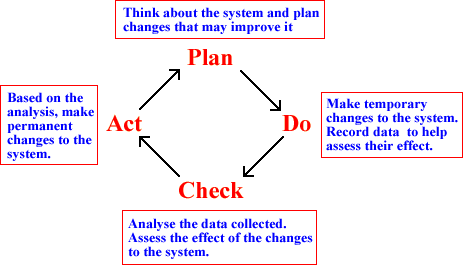

If you don't want to print now,
What is the purpose of Statistics?
When non-statisticians think of statistics, the first thing that usually comes to mind is data. Large amounts of economic, social and administrative data are routinely collected and published. Most researchers also collect data. Statistical analysis uses data, but the data are not the goal.
Data are the basic commodity of the statistics. Without data, there is no information on which to reach conclusions or base decisions.
Data contain information.
The purpose of statistics is to extract information from data.
Large data sets must be summarised before patterns and relationships can be seen. In smaller data sets, the problem is usually that there is not enough information to get a clear answer to questions of importance. Statistical methods are needed to describe precision and to ensure that the highest precision is obtained.
Context
In general, users of statistics are neither interested in data or in statistical methods, but are only interested in questions in their own subject area.
The aim of statistics is to supply useful information to people whose main area of expertise is not statistics. Statistical methods are only useful if they can extract information from data to help answer discipline-specific questions. The underlying context is therefore the most important aspect of any statistical analysis.
If you are not primarily a statistician, you will appreciate statistical methods when they are needed in your career!
Simple series of steps
The simplest application of statistics addresses a single question in the context of some practical subject area.
Statistics has a role to play in all stages of this process.
Feedback
The initial question is usually less well defined and a single pass through the process is not enough.

An example of feedback arises when a small fraction of the data is initially collected and analysed. The information obtained from this pilot study is used to refine the data collection process.
Another example of feedback occurs when the initial analysis reveals unusual or unexpected features in the data. Such features may suggest further questions and therefore further data collection.
Continuous quality improvement
Statistical analysis is an important part of long-term monitoring and improvement of the performance of many types of system. This process is often called continuous quality improvement.
The statistical part of the process again involves a feedback cycle of data collection and analysis, aimed at improving aspects of the system.

The Plan-Do-Check-Act cycle is most often used in commerce and industry, but can also be used to 'improve' many biological and other systems.
Data structure
Context is critically important, but the statistical methods that can be used on data depend mostly on the internal structure of the data.
|
|
|
||||||||||||||||||
These three data sets have the same basic structure, so the same statistical methods can be applied to all of them.
Variables and 'individuals'
Most data sets have a fairly simple structure. One or more measurements ('variables') are recorded from each of a collection of 'individuals' (also called 'cases' or 'units'). The data can be presented in a data matrix.

Most variables in a data set are either numerical or categorical.
Numerical variables
These have values that are numbers and can be further classified into:
Statistical methods that can be used for continuous variables are not always appropriate for discrete variables.
Categorical variables
The values of a categorical variable are selected from a small group of categories. A further classification is:
Most statistical methods for categorical data can be applied to both ordinal and nominal variables.
Labels
In some data sets, each individual has a unique 'name' that can be used to identify it. We call this a label variable.
Warning!
When you see a column of numbers in your data matrix, do not assume that it is a numerical variable.
Numbers are sometimes used as codes for categorical or label variables.
Categorical variables and groups
A categorical variable can be used to split the individuals in a data set into groups. We might treat individuals with values "A", "B", etc. as belonging to different groups.
Conversely, if data were separately collected from different groups of individuals, the resulting data sets could be combined with a categorical variable distinguishing between the groups. Its values might be defined as "A", "B", etc. to identify the group membership of any individual.
A categorical variable and groups are often two ways of representing the same data.
Data presented in a separate list for each group are called unstacked whereas if the data are presented as a single list alongside a categorical variable, they are called stacked.
Defining new variables
When given a data set to analyse, think about whether its variables are the most useful ones to analyse. Sometimes a simple transformation provides a variable whose values are more meaningful or highlight a different aspect of the data.
For example, it is usually more meaningful to compare the population density of countries than either their populations or areas:
| Density = | Population | ||||
Information can be exchanged between the two data matrices in order to analyse both sets of data together.
Information can be obtained from multi-level data by examining both the group-level and individual-level data matrices. Properly analysing multi-level data and interpreting the results of the analysis require a lot of careful thought! 1.2.7 Structure of the e-bookExploratory data analysis The initial chapters of this e-book describe graphical and numerical ways to explore and summarise data. Appropriate methods depend on the structure of the data set — the number and types of its variables.
Data collection Statisticians should be involved before any data are collected. Statistical principles can be applied to the data collection process that ensure that the resulting data can be meaningfully analysed. Chapters 7 and 8 explore the idea of random sampling and describe some principles that should be followed in data collection. Inference To fully understand the information that is contained in most data sets, we must take account of randomness — if we collected the data again, the values would often be different. The relevant statistical methods are collectively called inference. Again, the details of the statistical analysis depend mostly on the structure of the data set — the number and types of its variables.
1.3 Variation
1.3.1 Signal and noiseSignal and noise Electronics and telecommunications engineers distinguish between the signal that is being communicated between two locations and the random noise that is added by the communications channel. The noise degrades the signal and, in the worst cases, can make the signal difficult to detect. The word "CAST" is hard to read in the following noisy image. Audio equipment often quotes its signal-to-noise ratio as a measure of quality. Noise again deteriorates the signal — the 'perfect' music that you want to hear. Signal = information you want The concepts of signal and noise also apply to data sets. 1.3.2 Natural variabilityReasons for variability Most statistical data sets contain measurements from a collection of 'individuals'. These individuals are not identical so measurements made from them also vary from individual to individual. Even when the 'individuals' are very similar, recorded measurements from them often vary due to:
1.3.3 Variability caused by experimentsIntentional differences In experiments, different 'individuals' are given different experimental treatments with the intention of comparing these treatments. We hope to find whether changing the experimental treatment causes differences in the measurements.
Signal and noise in experimental data In experimental data sets, the variability caused by different experimental conditions is the signal in the data since the intention of the experiment is to determine the effect of these differences. However the signal in the data is usually obscured by the natural variability in the data — the noise in the data set. In the experimental data on the right, it is difficult to assess whether the fertiliser has increased plant yield because of the natural variability between plants.
1.3.4 Variability in survey dataSurveys Some types of data are obtained from experiments. In experiments, we actively change some characteristics of each individual — choosing an experimental treatment. Other types of data are obtained by selecting a sample of individuals in some way and simply recording information about them — a survey. Summarising data Survey data sets are often large and are summarised by numerical
values called summary
statistics. Natural variability between individuals means that summary statistics must be considered as random quantities — similarly collected data would result in different values. A important role of statistics is to understand and describe the randomness of such summary statistics. 1.3.5 Explained and unexplained variationTypes of variation The ideas of signal and noise correspond to explained and unexplained variation in a variable, X.
In some data sets, none of the variation in X can be explained in terms of other variables that have been recorded. In other data sets, some of the variation in X can be explained in terms of other variables whose values are available, but part of its variation remains unexplained. A statistical analysis often separates and describes these two components of the variation. Both provide useful information. 1.3.6 Predicting future variationVariation and prediction In earlier pages of this section, we treated unexplained variation in data as 'noise' — a nuisance that cannot be avoided and that only serves to complicate the analysis of data. This is not totally true. Variation can be interesting in its own right, especially when we are interested in predicting the future. If we can assume that there will be no systematic change to the process that generated the observed values in our data, ... the proportion of times that an event happened in the past indicates the chance that it will happen in the future. |